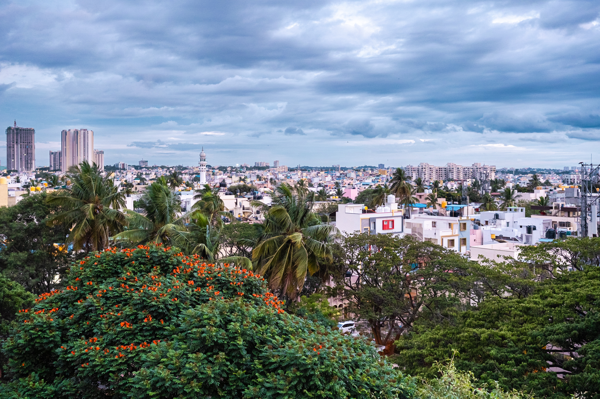
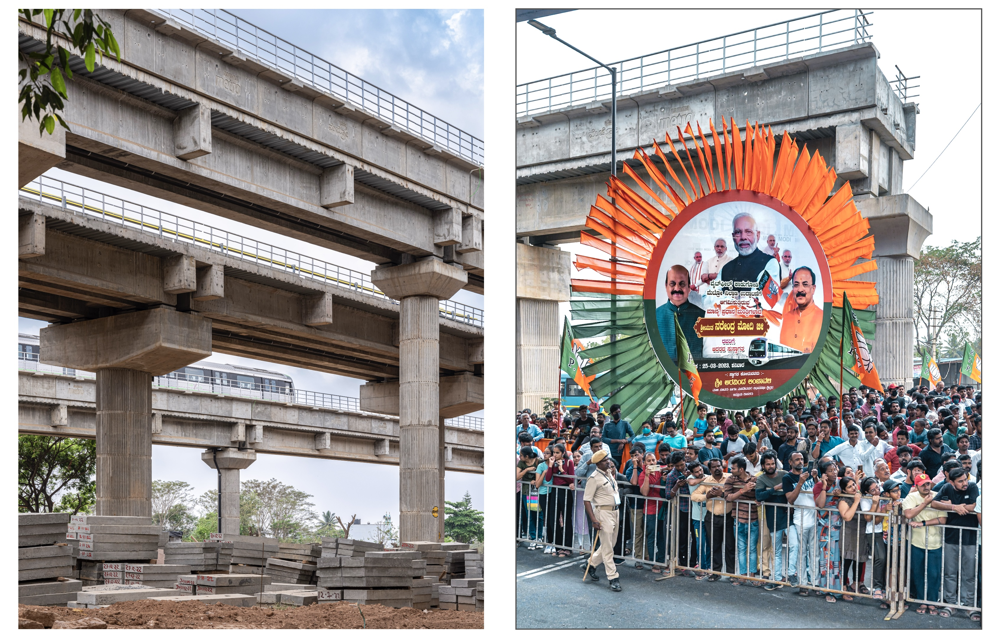
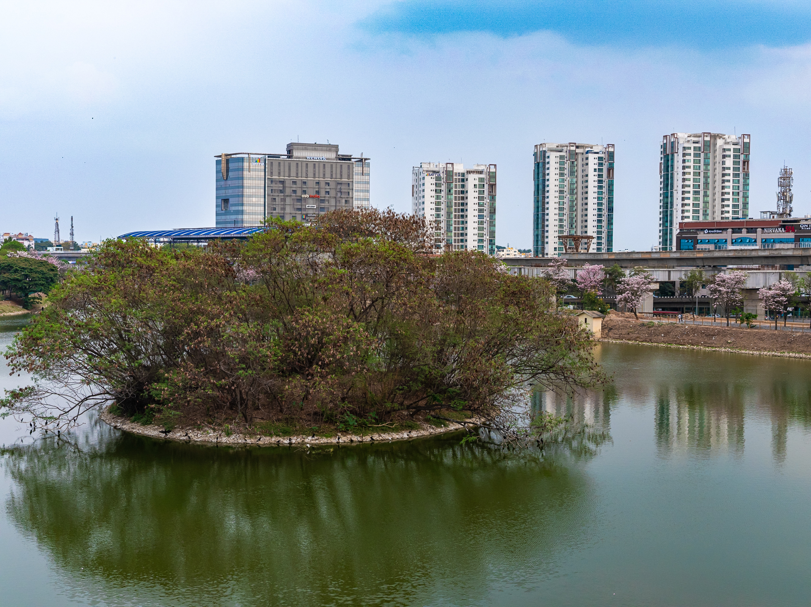
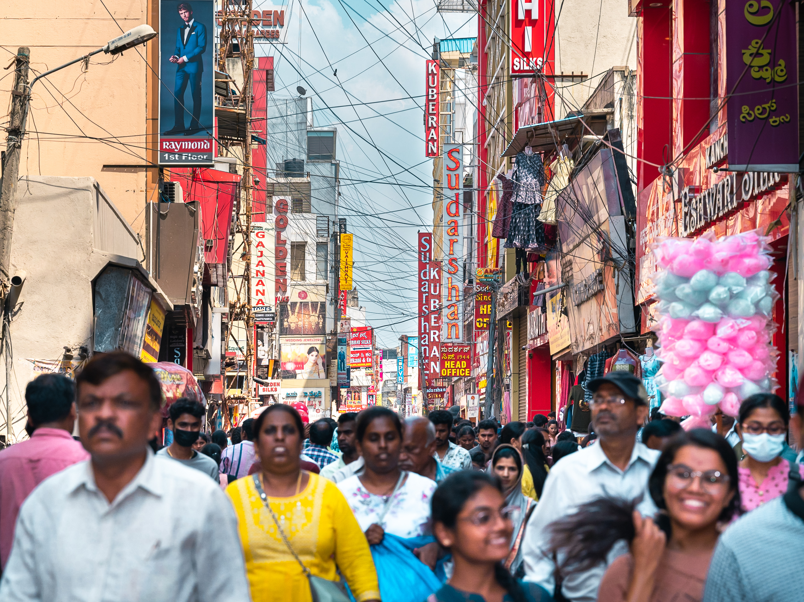
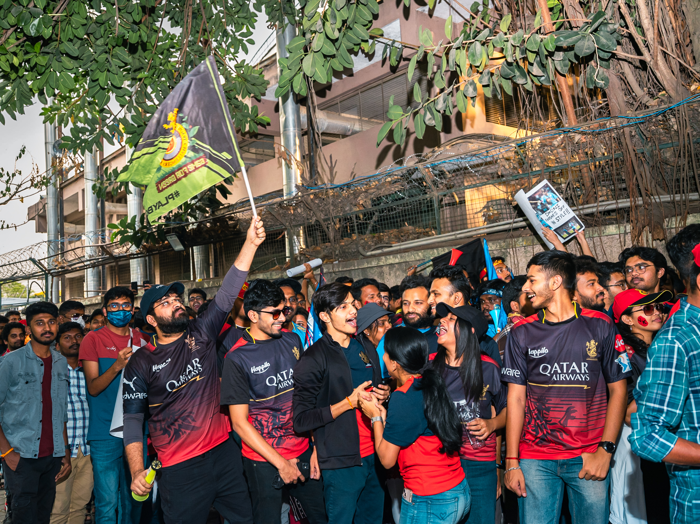
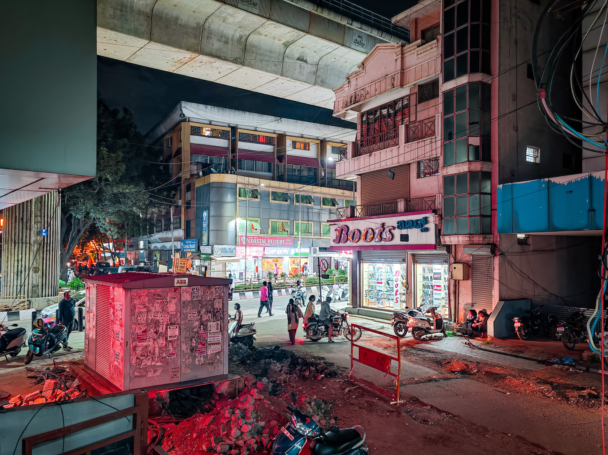
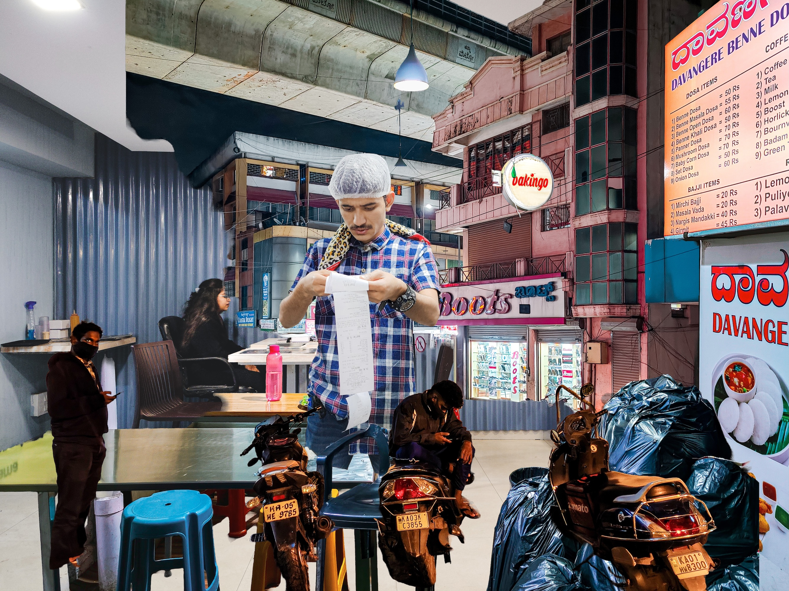
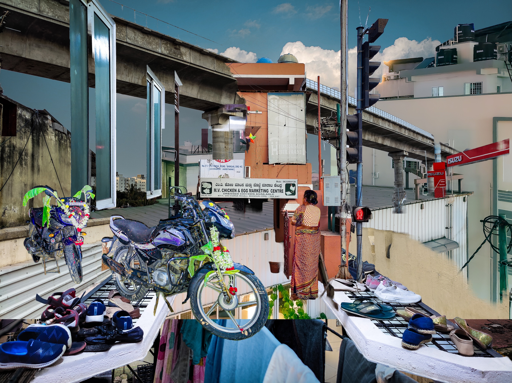

Did BMRCL stage a payments disruption to nudge users toward smart cards? A data-driven investigation into the February 2025 fare hike.
Did BMRCL stage a payments disruption to nudge users toward smart cards? A data-driven investigation into the February 2025 fare hike.
Let's take a look at the source of data that informs the analysis to follow.
Namma Metro publishes a breakdown of ridership by payment methods used daily by passengers entering the system.
The dataset spans from October 26, 2024 to May 5, 2025 — 150 days of collected data. Here's a side-by-side comparison of payment methods on the first and last recorded days.
Notably, NCMC usage grew 52% (7,444 → 11,352) while Smart Cards saw a more modest 18% increase. Tokens and QR remained relatively stable.
| Record Date | Total Smart Cards | Stored Value Card | One Day Pass | Three Day Pass | Five Day Pass | Total Tokens | Total NCMC | Group Ticket | Total QR | QR NammaMetro | QR WhatsApp | QR Paytm |
|---|---|---|---|---|---|---|---|---|---|---|---|---|
| 26-10-2024 | 353,460 | 352,496 | 853 | 43 | 68 | 241,883 | 7,444 | 512 | 177,279 | 49,351 | 95,571 | 32,357 |
| Record Date | Total Smart Cards | Stored Value Card | One Day Pass | Three Day Pass | Five Day Pass | Total Tokens | Total NCMC | Group Ticket | Total QR | QR NammaMetro | QR WhatsApp | QR Paytm |
|---|---|---|---|---|---|---|---|---|---|---|---|---|
| 05-05-2025 | 416,198 | 415,630 | 88 | 32 | 448 | 217,786 | 11,352 | 138 | 175,376 | 50,424 | 94,205 | 30,747 |
Over 150 days of collected data (Oct 2024 – May 2025), here's a calendar view of total daily ridership. Each cell represents one day.
Every now and then, NammaMetro fails to report ridership numbers. This usually happens when the individual tasked with manually updating (!!!) the data page goes on leave.
Looks like a mouth with a few broken teeth! What sort of data imputation makes sense here?
When the dataset grows large enough over several months, it makes sense to fill unreported dates with an average of similar days, e.g. If a weekday Tuesday was missing, we would take the average of the last 4-6 available weekday Tuesdays.
| Record Date | Day of Week | Total Riders |
|---|---|---|
| 2025-04-12 | Saturday | <NA> |
| 2025-04-13 | Sunday | <NA> |
| 2025-04-15 | Tuesday | <NA> |
| 2025-04-17 | Thursday | <NA> |
| 2025-04-18 | Friday | <NA> |
| 2025-04-20 | Sunday | <NA> |
| 2025-04-21 | Monday | <NA> |
| 2025-04-24 | Thursday | <NA> |
| 2025-05-01 | Thursday | <NA> |
| 2025-05-03 | Saturday | <NA> |

Ⓜ️ Sri Balagangadharanatha Swamiji Station, Hosahalli 🟣 Purple Line© 2023 Mahesh Shantaram. All Rights Reserved.
NammaMetro crossed a daily ridership of 700,000 in October 2023.
In October 2023, NammaMetro first crossed 700,000 daily riders. The line chart shows the trajectory of total daily ridership over our dataset window.
👆🏼 In December 2024, NammaMetro's single-day ridership crossed 900,000 for the first time!
The ridership hit a record of 700,000 passengers in October 2023. It took just a little over a year to add 200,000 riders/day to the system.
| # | Record Date | Day of Week | Total Riders |
|---|---|---|---|
| 1 | 2025-01-27 | Monday | 909,522 |
| 2 | 2024-12-10 | Tuesday | 903,928 |
| 3 | 2025-01-24 | Friday | 902,476 |
| 4 | 2024-12-04 | Wednesday | 901,475 |
| 5 | 2024-12-05 | Thursday | 901,230 |
| 6 | 2024-12-09 | Monday | 895,461 |
| 7 | 2025-01-28 | Tuesday | 891,111 |
| 8 | 2024-12-13 | Friday | 890,143 |
| 9 | 2024-11-19 | Tuesday | 889,113 |
| 10 | 2024-12-07 | Saturday | 883,300 |
👆🏼 Sundays, holidays (state and national) and major festivals are when people take a break from the metro.

Ⓜ️ Chickpete Metro Station 🟢 Green Line© 2023 Mahesh Shantaram. All Rights Reserved.
| # | Record Date | Day of Week | Total Riders |
|---|---|---|---|
| 1 | 2025-04-27 | Sunday | 549,663 |
| 2 | 2024-11-03 | Sunday | 536,524 |
| 3 | 2025-01-19 | Sunday | 534,139 |
| 4 | 2025-02-26 | Wednesday | 520,284 |
| 5 | 2025-03-22 | Saturday | 498,494 |
| 6 | 2025-01-14 | Tuesday | 484,293 |
| 7 | 2024-11-02 | Saturday | 480,284 |
| 8 | 2025-03-09 | Sunday | 473,005 |
| 9 | 2024-11-01 | Friday | 404,342 |
| 10 | 2025-03-30 | Sunday | 402,795 |
Weekdays (Mon–Thu) show the highest ridership, driven by daily commuters.
| Record Date | Day of Week | Total Riders |
|---|---|---|
| 2025-04-27 | Sunday | 549,663 |
| 2025-04-28 | Monday | 818,938 |
| 2025-04-29 | Tuesday | 841,700 |
| 2025-04-30 | Wednesday | 757,335 |
| 2025-05-02 | Friday | 740,148 |
| 2025-05-04 | Sunday | 567,205 |
| 2025-05-05 | Monday | 820,850 |
Ridership dips on Fridays and Saturdays as some commuters shift to personal vehicles or take the day off.
Sundays see the lowest ridership, driven primarily by casual users rather than commuters.
Monday–Thursday patterns are remarkably consistent, reflecting the city's work rhythm.
This is a series of line plots showing the trend in total ridership for each day of the week over the past several weeks. This makes it easy to spot patterns for specific days and answer several key questions concerning:
| Day of Week | Count |
|---|---|
| Monday | 22 |
| Tuesday | 24 |
| Wednesday | 22 |
| Thursday | 18 |
| Friday | 23 |
| Saturday | 23 |
| Sunday | 18 |
Friday marks a clear shift where casual ridership begins to rise while commuter numbers decline.
The starkest contrast appears on Sundays, where commuter numbers plummet while casual ridership reaches peak levels.
weekly_average summarizes three months of metro ridership data showing the typical number of passengers using each payment method on different days of the week. It eliminates dates that display anomalous behaviour so that the result is more representative of an average week. This table forms the foundation for our analysis of commuter patterns and weekend behavior ahead in the analysis.
Surprising find: Smart Card and NCMC usage peaks during the week; Tokens and QR peaks on weekends.
| Day of Week | Smart Cards | NCMC | Tokens | QR | Group Ticket | Total Riders |
|---|---|---|---|---|---|---|
| Monday | 441,462 | 12,493 | 212,673 | 191,298 | 561 | 858,487 |
| Tuesday | 451,116 | 13,248 | 213,403 | 178,053 | 555 | 856,375 |
| Wednesday | 434,914 | 12,467 | 210,393 | 195,043 | 698 | 853,515 |
| Thursday | 450,936 | 12,935 | 201,499 | 183,966 | 571 | 849,907 |
| Friday | 426,963 | 12,319 | 208,535 | 184,141 | 632 | 832,590 |
| Saturday | 338,942 | 8,019 | 235,329 | 213,908 | 788 | 796,986 |
| Sunday | 178,857 | 4,883 | 249,868 | 204,008 | 687 | 638,303 |
From Monday to Thursday, Smart Card and NCMC usage – typically used by regular metro riders commuting to work – averages 450,000 and 12,000 respectively.
Tokens and QR payments, typically used by non-regular metro riders, reach peak usage on Sundays. This suggests weekend and holiday demand is driven by casual users.
Commute vs Casual rides by Traffic BandGiven what we have learned so far, let us introduce new data features into our dataframe:
Commute: Sum of Smart Cards and NCMC users, representing regular travelers who prefer reusable payment methodsCasual: Sum of Tokens, QR tickets, and Group tickets, representing occasional travelers who opt for single-journey payment methodsTraffic Band: Weekday (Mon-Thu), Weekend Lite (Fri-Sat) or Weekend (Sun)Ridership starts to dip on Fridays (perhaps due to liberal work-from-office policies in the IT industry or commuters preferring to use their personal vehicles.) For another segment of workers, Saturdays are as much a working day as the rest of the week.
On Sundays, Smart Cards+NCMC usage sees a ~60% drop from average Weekday levels. Tokens+QR increases by ~15%.
This behaviour confirms the presence of two distinct types of users: Commuters and Casual Users.
NammaMetro thus exhibits a dual role: a commuter necessity on weekdays and a convenient transport option on weekends and holidays
💼 Weekdays – Just Another Manic Monday to Thursday
During weekdays, commuter ridership dominates, showing a consistent pattern that reflects the city's work rhythm. These commuters rely on Smart Cards and NCMC to quickly move in and out of the NammaMetro system.
🍻 Weekend Lite – Should I Stay or Should I Go?
A remarkable crossover occurs in this band. Friday marks a clear shift where casual ridership begins to rise while commuter numbers decline. This pattern becomes even more pronounced on Saturday, where casual users nearly match commuter levels.
🛌🏼 Weekend – A Day of Rest For Coders (But Not QR Coders)
The starkest contrast appears on Sundays, where the two rider categories tell very different stories. Commuter numbers plummet to their lowest point while casual ridership reaches peak levels.
| Day of Week | Traffic Band | Commute | Casual | Total |
|---|---|---|---|---|
| Monday | Weekday | 453,955 | 404,532 | 858,487 |
| Tuesday | Weekday | 464,364 | 392,011 | 856,375 |
| Wednesday | Weekday | 447,381 | 406,134 | 853,515 |
| Thursday | Weekday | 463,871 | 386,036 | 849,907 |
| Friday | Weekend Lite | 439,282 | 393,308 | 832,590 |
| Saturday | Weekend Lite | 346,961 | 450,025 | 796,986 |
| Sunday | Weekend | 183,740 | 454,563 | 638,303 |

Ⓜ️ Benniganahalli 🟣 Purple Line© 2023 Mahesh Shantaram. All Rights Reserved.
During weekdays, commuter ridership dominates, showing a consistent pattern that reflects the city's work rhythm. These commuters rely on Smart Cards and NCMC to quickly move in and out of the NammaMetro system.
A remarkable crossover occurs in this band. Friday marks a clear shift where casual ridership begins to rise while commuter numbers decline. This pattern becomes even more pronounced on Saturday, where casual users nearly match commuter levels.
The starkest contrast appears on Sundays, where the two rider categories tell very different stories. Commuter numbers plummet to their lowest point while casual ridership reaches peak levels.
Remember that NammaMetro fails to report ridership numbers on some days, so the monthly ridership totals calculated from the data is going to be only an approximate. However, we can still identify trends and patterns by analysing data movement on a granular level.
Here are the official monthly ridership stats as reported by BMRCL:
| Month | Ridership |
|---|---|
| 2024 July | 23,633,166 |
| 2024 August | Unavailable |
| 2024 September | 23,072,685 |
| 2024 October | Unavailable |
| 2024 November | 23,613,895 |
| 2024 December | 24,982,906 |
| 2025 January | 24,914,736 |
| Year-Month | Monthly Total (millions) | Daily Average (thousands) |
|---|---|---|
| 2024-11 | 19.717 | 788.697 |
| 2024-12 | 22.363 | 798.696 |
| 2025-01 | 20.231 | 809.229 |
| 2025-02 | 19.146 | 765.830 |
| 2025-03 | 16.526 | 718.505 |
| 2025-04 | 12.379 | 773.703 |
✨ The reported vs. estimated ridership numbers align closely, validating the accuracy of our extrapolations.
From February onwards, monthly totals decline steadily — from 19.1M to 12.4M. This coincides with the fare hike (Feb 9) and the summer holiday season.
Statistical summary of data spread:
January 2025 shows a wider spread due to the Sankranti holiday dip (Jan 14) and the Jan 15-16 Smart Card anomaly. The outlier circles reveal these exceptional days.
| R² Range | Interpretation | Use Case |
|---|---|---|
| > 0.75 | Very Strong | Highly reliable for forecasting |
| 0.50 - 0.75 | Strong | Good for general predictions |
| 0.25 - 0.50 | Moderate | Use with caution |
| 0.10 - 0.25 | Weak | Not suitable for predictions |
| ≤ 0.10 | Very Weak | Indicates random behaviour |
The purple commute line (Smart Cards + NCMC) shows strong weekly cycles with sharp weekend dips. R² = 0.005 — essentially flat, meaning commuter ridership is remarkably stable over the period.
The blue casual line (Tokens + QR + Group) inversely mirrors the commute pattern, rising on weekends. R² = 0.105 indicates steady growth in casual ridership — possibly an increase in tourism or recreational metro usage.

Ⓜ️ National College 🟢 Green Line© 2024 Mahesh Shantaram. All Rights Reserved.
Holidays and cultural events have dramatically different impacts on different user segments. The separate but complementary views of Commute and Casual ridership expose patterns that would be completely hidden in the aggregate data.
👉 Unfortunately, the data gap from Jan 13–17 prevents us from fully seeing this play out. It seems our data collector at NammaMetro also took a long weekend!
🤔 What remains now is to explain the less obvious bump in Commuter traffic on Jan 15-16 and Casual riders on Jan 25.
Unfortunately, the data gap from Jan 13–17 prevents us from fully seeing the Sankranti effect play out. It seems our data collector at NammaMetro also took a long weekend! The hatched zone shows the missing period.
Zooming in on the available data, pulsing red dots mark Jan 15-16 — the anomalous Smart Card surge that demands explanation.
Hidden beneath a rather normal-looking Thursday ridership, we see the shrinkage in QR+Tokens ("Casual") is compensated by a boost in Smart card+NCMC ("Commute").
Upon closer observation, we see that QR payments were close to zero, indicating possible system disruption. Consequently, it appears that disappointed users have opted for Smart Cards to get on with their day.
Hidden beneath a rather normal-looking Thursday ridership, we see the shrinkage in QR+Tokens ("Casual") is compensated by a boost in Smart card+NCMC ("Commute"). QR payments were close to zero, indicating possible system disruption.
On Wednesday, January 15, the Token system was disrupted, causing a sharp drop to just 85K transactions (vs normal ~200K). Meanwhile, Smart Card transactions shot up to 543K — a +200K single-day spike.

Ⓜ️ Cubbon Park 🟣 Purple Line© 2023 Mahesh Shantaram. All Rights Reserved.
Bangalore is a rising destination for major sporting and entertainment events. On Jan 25, Karnataka played (and won!) against Punjab in the Ranji Trophy at Bangalore's (metro-accessible) Chinnaswamy Stadium. A couple of weeks later, Ed Sheeran enthralled audiences at the (metro-accessible) NICE Grounds.
The spike in 1/3/5 day passes suggests that the city welcomed many out-of-state sports fans who made a holiday out of their trip.
This data quantifies how major events contribute to Bangalore's visitor economy. The metro pass sales act as a real-time proxy for tourist activity, showing how sports and entertainment events shape urban movement patterns.
The surge to ~1,750 One-Day Passes (more than double the typical volume) clearly indicates an influx of visitors specifically for the Ranji Trophy final. Karnataka played (and won!) against Punjab at Chinnaswamy Stadium.
The concurrent rises in Three-Day and Five-Day Passes suggest that a significant portion of visitors planned extended stays. Elevated pass levels continued through January 26-27. A couple of weeks later, Ed Sheeran enthralled audiences at the NICE Grounds — another metro-accessible venue.

Ⓜ️ Whitefield (Kadugodi) Metro Terminus 🟣 Purple Line and the National Common Mobility Card (NCMC).© 2023 Mahesh Shantaram. All Rights Reserved.
Following recommendations of a fare fixation committee, BMRCL revised its fares for the first time since 2017. The new fares took effect on February 9, 2025.
The decision proved to be hugely unpopular with regular metro users, rudely surprising many commuters at the turnstiles on Monday morning, as well as public transportation activists.
The fare increase far exceeded initial projections, and following a public backlash, the maximum fare increase was later capped at 71.43%. Still too high.
The media caught onto the public sentiment and variously reported a drop in daily ridership between 40,000 and 100,000 (13% by one account).
So, did commuters truly abandon the metro in protest, or were other factors at play? Let's turn to statistical data analysis to separate perception from reality.
To assess the immediate impact of the fare hike, we analyzed ridership trends over a six-week window—three weeks before and after the fare revision on February 9, 2025.
The data presents a clear downward trend in daily weekday ridership, with a trendline (R² = 0.740) indicating a strong fit.
✅ Ridership decline is evident — The trendline suggests a sustained drop rather than a random fluctuation.
📉 Sharp immediate fall — In the week following the fare hike, ridership plunged significantly.
🔢 Quantifiable drop — In the three weeks before Feb 9, the average weekday ridership was 874,000 riders. In the three weeks after, it fell to 777,000 riders, an 11.1% decrease.
⏳ No immediate recovery — Ridership does not return to previous levels, suggesting a short-term sustained impact.
But Is the Fare Hike the Only Reason?
While the data confirms a downward trend, could other confounding factors—such as holidays, weather, or seasonal fluctuations—be at play?
As it turns out, Aero India 2025, Bangalore's bi-annual international air show, took place from Feb 10 to Feb 14—right after the fare hike.
✈️ Massive footfall at an event outside Metro reach — On its final day alone, Aero India drew over 100,000 visitors to Yelahanka Airbase. Past editions have exceeded a million attendees over five days.
🚆 Why does this matter? — Aero India ran on all weekdays (Feb 10-14), meaning potential Metro users were commuting elsewhere. The Yelahanka Airbase is not yet connected to the NammaMetro network.
Ⓜ️ Yelahanka (Under Construction) 🔵 Blue Line© 2025 Mahesh Shantaram. All Rights Reserved.
The trendline (R² = 0.740) confirms a strong downward fit. Pre-hike average: 874,000 riders. Post-hike average: 777,000 riders. That's an 11.1% decrease.
👥 Commuters hit hardest — The drop in weekday ridership was primarily driven by daily commuters who reduced their Metro usage more significantly than casual riders. Casual ridership showed some resilience.
💳 Payment method trends reveal a shift — Smart Card users remain the majority, but the decline in token-based payments suggests infrequent riders reduced trips. A drop in QR and NCMC-based transactions indicates a potential pullback from occasional users or tourists.
⚠️ Fare structure changes may have influenced behavior — Along with the fare hike, BMRCL introduced new fare rules:
🔍 A closer look at trends
To quantify the impact of the fare hike, we conducted statistical hypothesis testing at a 99% confidence level for weekdays and a 95% confidence level for weekends.
| Traffic Band | Metric | Pre-Event Mean | Post-Event Mean | Change % | CI Range | Significant? |
|---|---|---|---|---|---|---|
| Weekday | Smart Cards | 457,796 | 414,920 | -9.4% | [-12.2%, -6.6%] | ⬇︎ |
| Weekday | NCMC | 13,338 | 18,590 | +39.4% | [33.0%, 45.7%] | ⬆︎ |
| Weekday | Tokens | 202,258 | 179,534 | -11.2% | [-13.3%, -9.2%] | ⬇︎ |
| Weekday | QR | 186,419 | 161,071 | -13.6% | [-15.8%, -11.4%] | ⬇︎ |
| Weekday | Commute | 471,134 | 433,510 | -8.0% | [-10.8%, -5.2%] | ⬇︎ |
| Weekday | Casual | 389,195 | 341,176 | -12.3% | [-14.0%, -10.7%] | ⬇︎ |
| Traffic Band | Metric | Pre-Event Mean | Post-Event Mean | Change % | CI Range | Significant? |
|---|---|---|---|---|---|---|
| Weekend Lite | Smart Cards | 365,396 | 344,836 | -5.6% | [-14.4%, 3.2%] | 🚫 |
| Weekend Lite | NCMC | 10,280 | 15,578 | +51.5% | [39.4%, 63.6%] | ⬆︎ |
| Weekend Lite | Tokens | 223,676 | 198,715 | -11.2% | [-16.8%, -5.5%] | ⬇︎ |
| Weekend Lite | QR | 200,574 | 182,872 | -8.8% | [-15.9%, -1.8%] | ⬇︎ |
| Weekend Lite | Commute | 375,676 | 360,414 | -4.1% | [-12.9%, 4.7%] | 🚫 |
| Weekend Lite | Casual | 424,937 | 382,057 | -10.1% | [-15.3%, -4.9%] | ⬇︎ |
NCMC Growth Amid Decline — The most striking finding is that NCMC usage actually surged 🚀 39.4% (CI: +33.0% to +45.7%) across both Weekday and Weekend Lite bands while all other payment methods declined.
🚇 Smart Card Decline Severe — Despite the 5-10% discount benefit, Smart Card use dropped by 9.4% (CI: -12.2% to -6.6%) 📉
📱 QR Disadvantaged — QR-based transactions saw the steepest decline at -13.6% (CI: -15.8% to -11.4%) 📉
🎢 Weekend riders showed more mixed behavior — Token usage fell by 11.2%. Smart Card (-5.6%) and Commute (-4.1%) declines were NOT statistically significant 🚫
Weekend Lite riders showed more mixed behavior. Smart Card (-5.6%) and Commute (-4.1%) declines were NOT statistically significant 🚫. But NCMC surged +51.5% — the strongest growth of any segment.
NCMC Growth Amid Decline — NCMC growth has a strong positive relationship with Smart Cards (0.79) and Commute (0.81), suggesting that many regular commuters adopted NCMC instead of abandoning metro usage entirely.
🚇 Smart Card Decline Severe — The heatmap shows a strong negative correlation (-0.73) between Smart Cards and Casual ridership, reinforcing that casual users were more likely to abandon Smart Cards entirely rather than switch.
📱 QR Disadvantaged — QR usage shows a very strong negative correlation (-0.88) with NCMC, indicating that QR users heavily migrated to NCMC payments.

Ⓜ️ Krishnarajapura Metro Station 🟣 Purple Line© 2023 Mahesh Shantaram. All Rights Reserved.
The two strongest correlations tell the migration story: NCMC↔SmartCard (0.79) shows commuters adopted NCMC alongside Smart Cards. QR↔NCMC (–0.88) reveals QR users heavily migrated to NCMC.
While the statistical data confirms significant shifts in user behaviour, the heatmap reveals that these shifts involved migration between payment methods rather than total abandonment. NCMC adoption came largely from former QR users, while QR's decline aligns with a drop in casual ridership.
Let's start with what is plainly visible in the data.
👆🏼 Jan 15: Notice the sudden drop in Tokens and sharp rise in Smart Cards.
👇🏼 Jan 16: A collapse in QR payments is accompanied by an astronomical surge in Smart Cards.
On January 16, QR payments collapsed to just 12,903 transactions (vs normal ~190K). Meanwhile, Smart Card transactions hit an unprecedented 631,442 — an all-time record. Total ridership remained normal, proving users didn't abandon the metro — they switched payment methods.
Before drawing conclusions, let's lay out the key observations and assumptions:
To confirm whether these changes were natural variations or an engineered shift, we can put our hypothesis to a statistically rigorous test.
| Hypothesis | Description |
|---|---|
| H₀ | There is no significant difference in the mean transaction volume before and after Jan 14 for the given payment method. Any observed difference is due to random variation. |
| H₁ | There is a significant difference in the mean transaction volume before and after Jan 14. Any observed difference indicates a systematic shift in commuter behavior. |
Confidence Level: 99.9% (α = 0.001)
| Traffic Band | Metric | Pre-Event Mean | Post-Event Mean | Change % | CI Range | Significant? |
|---|---|---|---|---|---|---|
| Weekday | Smart Cards | 439,304 | 481,799 | +9.7% | [1.0%, 18.4%] | ⬆︎ |
| Weekday | Tokens | 212,353 | 189,570 | -10.7% | [-19.6%, -1.9%] | ⬇︎ |
| Weekday | QR | 184,206 | 181,343 | -1.6% | [-8.1%, 5.0%] | 🚫 |
| Weekday | NCMC | 12,024 | 15,906 | +32.3% | [24.1%, 40.4%] | ⬆︎ |
| Weekend Lite | Smart Cards | 379,006 | 378,926 | -0.0% | [-14.3%, 14.3%] | 🚫 |
| Weekend Lite | Tokens | 223,547 | 225,160 | +0.7% | [-12.8%, 14.2%] | 🚫 |
| Weekend Lite | QR | 195,645 | 225,211 | +15.1% | [1.4%, 28.9%] | ⬆︎ |
| Weekend Lite | NCMC | 9,429 | 13,278 | +40.8% | [20.3%, 61.4%] | ⬆︎ |
Note: As defined earlier in the analysis, Weekday is Monday to Thursday; Weekend Lite is Friday & Saturday.
At 99.9% confidence, the data confirms: Token usage dropped sharply (–10.7%) exactly when Smart Cards surged (+9.7%). This isn't just a random fluctuation — it indicates a systematic shift in commuter behavior.
One thing is proven: This wasn't just a normal glitch. 💣

© 2021 Mahesh Shantaram. All Rights Reserved.